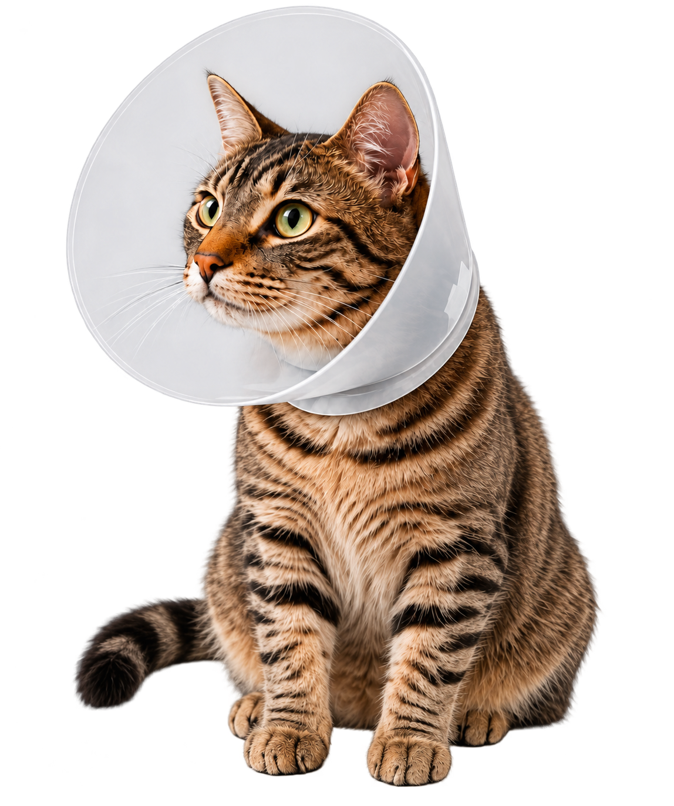

Cuidados
en casa
Sigue nuestras recomendaciones para una recuperación rápida y sin complicaciones.
Reposo y tranquilidad
Evita juegos bruscos y saltos por al menos 7-10 días.
Alimentación adecuada
Ofrece su alimento habitual en porciones moderadas.
Higiene de la herida
Mantén la zona limpia y seca. No apliques cremas ni medicamentos sin indicación.
Uso del collar isabelino
Evita que se lama o muerda la herida.
Observa y consulta ante cualquier duda
Si notas inflamación, sangrado, decaimiento o falta de apetito, contáctanos.


Con amor y cuidados, su recuperación será
rápida y exitosa.